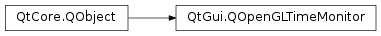

QOpenGLTimeMonitor¶
Note
This class was introduced in Qt 5.1.
Synopsis¶
Functions¶
- def
create() - def
destroy() - def
isCreated() - def
isResultAvailable() - def
objectIds() - def
recordSample() - def
reset() - def
sampleCount() - def
setSampleCount(sampleCount) - def
waitForIntervals() - def
waitForSamples()
Detailed Description¶
The
PySide2.QtGui.QOpenGLTimeMonitorclass wraps a sequence of OpenGL timer query objects.The
PySide2.QtGui.QOpenGLTimeMonitorclass is a convenience wrapper around a collection of OpenGL timer query objects used to measure intervals of time on the GPU to the level of granularity required by your rendering application.The OpenGL timer queries objects are queried in sequence to record the GPU timestamps at positions of interest in your rendering code. Once the results for all issues timer queries become available, the results can be fetched and QOpenGLTimerMonitor will calculate the recorded time intervals for you.
The typical use case of this class is to either profile your application’s rendering algorithms or to adjust those algorithms in real-time for dynamic performance/quality balancing.
Prior to using
PySide2.QtGui.QOpenGLTimeMonitorin your rendering function you should set the required number of sample points that you wish to record by calling setSamples(). Note that measuring N sample points will produce N-1 time intervals. Once you have set the number of sample points, call thePySide2.QtGui.QOpenGLTimeMonitor.create()function with a valid current OpenGL context to create the necessary query timer objects. These steps are usually performed just once in an initialization function.Use the
PySide2.QtGui.QOpenGLTimeMonitor.recordSample()function to delimit blocks of code containing OpenGL commands that you wish to time. You can check availability of the resulting time samples and time intervals withPySide2.QtGui.QOpenGLTimeMonitor.isResultAvailable(). The calculated time intervals and the raw timestamp samples can be retrieved with the blockingPySide2.QtGui.QOpenGLTimeMonitor.waitForIntervals()andPySide2.QtGui.QOpenGLTimeMonitor.waitForSamples()functions respectively.After retrieving the results and before starting a new round of taking samples (for example, in the next frame) be sure to call the
PySide2.QtGui.QOpenGLTimeMonitor.reset()function which will clear the cached results and reset the timer index back to the first timer object.See also
-
class
PySide2.QtGui.QOpenGLTimeMonitor([parent=nullptr])¶ Parameters: parent – PySide2.QtCore.QObjectCreates a
PySide2.QtGui.QOpenGLTimeMonitorinstance with the givenparent. You must callPySide2.QtGui.QOpenGLTimeMonitor.create()with a valid OpenGL context before using.
-
PySide2.QtGui.QOpenGLTimeMonitor.create()¶ Return type: PySide2.QtCore.boolInstantiate
PySide2.QtGui.QOpenGLTimeMonitor.sampleCount()OpenGL timer query objects that will be used to track the amount of time taken to execute OpenGL commands between successive calls toPySide2.QtGui.QOpenGLTimeMonitor.recordSample().Returns
trueif the OpenGL timer query objects could be created.
-
PySide2.QtGui.QOpenGLTimeMonitor.destroy()¶ Destroys any OpenGL timer query objects used within this instance.
-
PySide2.QtGui.QOpenGLTimeMonitor.isCreated()¶ Return type: PySide2.QtCore.boolReturns
trueif the underlying OpenGL query objects have been created. If this returnstrueand the associated OpenGL context is current, then you are able to record time samples with this object.
-
PySide2.QtGui.QOpenGLTimeMonitor.isResultAvailable()¶ Return type: PySide2.QtCore.boolReturns
trueif the OpenGL timer query results are available.
-
PySide2.QtGui.QOpenGLTimeMonitor.objectIds()¶ Return type: Returns a
QVectorcontaining the object Ids of the OpenGL timer query objects.
-
PySide2.QtGui.QOpenGLTimeMonitor.recordSample()¶ Return type: PySide2.QtCore.intIssues an OpenGL timer query at this point in the OpenGL command queue. Calling this function in a sequence in your application’s rendering function, will build up details of the GPU time taken to execute the OpenGL commands between successive calls to this function.
-
PySide2.QtGui.QOpenGLTimeMonitor.reset()¶ Resets the time monitor ready for use in another frame of rendering. Call this once you have obtained the previous results and before calling
PySide2.QtGui.QOpenGLTimeMonitor.recordSample()for the first time on the next frame.
-
PySide2.QtGui.QOpenGLTimeMonitor.sampleCount()¶ Return type: PySide2.QtCore.intReturns the number of sample points that have been requested with
PySide2.QtGui.QOpenGLTimeMonitor.setSampleCount(). If create was successfully called followingPySide2.QtGui.QOpenGLTimeMonitor.setSampleCount(), then the value returned will be the actual number of sample points that can be used.The default value for sample count is 2, leading to the measurement of a single interval.
-
PySide2.QtGui.QOpenGLTimeMonitor.setSampleCount(sampleCount)¶ Parameters: sampleCount – PySide2.QtCore.intSets the number of sample points to
sampleCount. After setting the number of samples with this function, you must callPySide2.QtGui.QOpenGLTimeMonitor.create()to instantiate the underlying OpenGL timer query objects.The new
sampleCountmust be at least 2.
-
PySide2.QtGui.QOpenGLTimeMonitor.waitForIntervals()¶ Return type: Returns a
QVectorcontaining the time intervals delimited by the calls toPySide2.QtGui.QOpenGLTimeMonitor.recordSample(). The resulting vector will contain one fewer element as this represents the intervening intervals rather than the actual timestamp samples.This function will block until OpenGL indicates the results are available. It is recommended to check the availability of the result prior to calling this function with
PySide2.QtGui.QOpenGLTimeMonitor.isResultAvailable().
-
PySide2.QtGui.QOpenGLTimeMonitor.waitForSamples()¶ Return type: Returns a
QVectorcontaining the GPU timestamps taken withPySide2.QtGui.QOpenGLTimeMonitor.recordSample().This function will block until OpenGL indicates the results are available. It is recommended to check the availability of the result prior to calling this function with
PySide2.QtGui.QOpenGLTimeMonitor.isResultAvailable().Note
This function only works on systems that have OpenGL >=3.3 or the ARB_timer_query extension. See
PySide2.QtGui.QOpenGLTimerQueryfor more details.
© 2018 The Qt Company Ltd. Documentation contributions included herein are the copyrights of their respective owners. The documentation provided herein is licensed under the terms of the GNU Free Documentation License version 1.3 as published by the Free Software Foundation. Qt and respective logos are trademarks of The Qt Company Ltd. in Finland and/or other countries worldwide. All other trademarks are property of their respective owners.